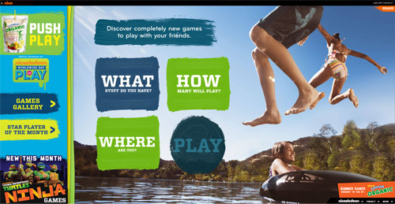
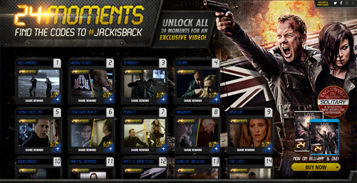

Will, The Front End Developer
Welcome intrepid explorer! This planet is home to Will Saunders, the Front End Developer. Originally from Florida, I've been developing for the web for five years and have worked on projects for national brands such as Honda, Intuit, Netflix, Fox, Paramount, Nickelodeon, and General Mills. Primarily, I work with HTML/CSS/JS, but I've also done work as a full stack developer with PHP.


In conjunction with Nickelodeon's annual "World Wide Day of Play", Capri Sun wanted a website where kids could search for games to play by number of players, objects on hand, and possible locations.
- Fully responsive across all devices.
- Developed a search algorithm that searches a json file.
- Highly interactive animations using Greensocks Animation Platform(JS).

Developed for FHE's DVD/Blu-Ray release of 24: Live Another Day. Social media released a new code every day that was used to unlock each box rewarding the user with an exclusive image or gif. Unlock all 24 and you got to watch a special clip from the behind the scenes commentary.
- Fully responsive across all devices.
- Integrated with Facebook and Twitter.